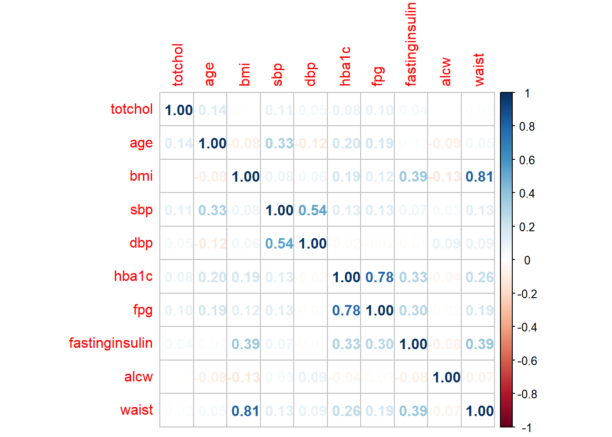
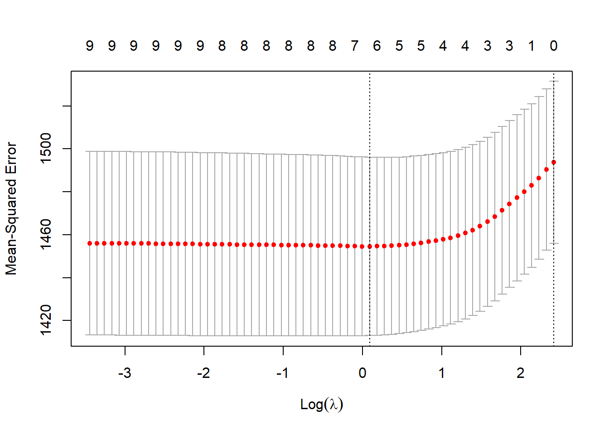

4 Generic Regularized Regression Demonstration (Jackson Heart Study Data)
4.0.1 Preparing the data
The Jackson Heart Study data will be examined using to show the process difference between LASSO, Ridge Regression, Elastic Net, and a traditional OLS regression model. The value of a subject’s leptin levels will be modeled against the subject’s age, bmi, hba1c, systolic blood pressure, diastolic blood pressure, plasma glucose level, waist circumference, how long they fasted before the examination, triglyceride levels, weight, HOMA-B, body surface area, ankle brachial index, weekly stress scores, neighborhood problem score, and past 12 month average alcohol use. This will be done for retirement age subjects(over 65 years old). In this example, only complete cases will be used. The purpose of this example is simply to show the method for fitting the three regularized regression models to a generic set of variables. It will demonstrate the method and interpretation of regularized regression output while providing a comparison against an ordinary least squares regression model.
set.seed(150)
#Import data sets
analysis1 <- read_dta("analysis1.dta")
df <- (analysis1)
#df<- df %>% select(c("totchol","age","bmi","sbp","dbp","hba1c","fpg","alcw", "waist")) %>% filter(age >70)
df<- df %>% select(c("age","bmi","sbp","dbp","hba1c","fpg","alcw", "waist","weight","bsa","abi","homa_b","totchol","leptin","trigs","fasthours","height","weeklystress","nbproblems")) %>% filter(age >65)
df<-na.omit(df)dfpred <- df %>% select(c(-"leptin"))
dfResp <- df %>% select(c("leptin"))
dfResp <- data.matrix(dfResp)
dfpred <- data.matrix(dfpred)The data is now cleaned and complete.
Before we begin, we fill first examine the data for correlations between the variables. This is a good initial step to become more familiar with the data being examined and in the case of a regression problem provides context as to whether or not a traditional OLS model will be appropriate.
corrplot::corrplot(cor(df), method="number")
The darker colors on the correlation matrix show areas where correlation is strongest, and give an indication of how much difficulty an ordinary least squares method will have fitting the data. In this case, there is some strong correlation between a few of the variables, so there is the possibility that regularization will help improve the fit marginally.
We will first fit an OLS model.
model = lm(leptin ~ bmi+sbp+dbp+hba1c+fpg+waist+alcw+totchol+bsa+trigs+abi+homa_b+age+weight+fasthours+height+weeklystress+nbproblems, data=df)
modelSum <- summary(model)Our next step in this approach would be to use significance testing and to remove variables that we don’t consider significant. In this approach, if we choose to remove the variables not considered significant, we would lose the information they provide to the model.
We will now showcase how to fit a regularized version of this regression model using the glmnet package. In the glmnet package, the value of alpha corresponds to the regularization method being used where an alpha of 0 corresponds to a Ridge Regression and an alpha of 1 corresponds to a LASSO regression model. An alpha between 0 and 1 corresponds to an Elastic Net regression model.
The basic code structure is as follows:
- Perform Cross Validation to acquire the optimal lambda. The alpha term is altered based on the method.
- Pass the optimal lambda into a new model based on the training data.
- Examine the impact on the coefficients.
- Calculate and display scores for each method.
4.0.2 Ridge Regression Model
model <- cv.glmnet(dfpred, dfResp, alpha=0)
bestLambda <- model$lambda.min
plot(model)
This plot shows the changing MSE for the various values of lambda. The algorithm chooses the lambda that gives the lowest MSE. The best lambda value chosen in this case was 3.9831346. This is now passed into the glmnet function to find the optimal model.
#Passing the Optimal Lambda
finalModel <- glmnet(dfpred,dfResp, alpha=0, lambda=bestLambda)
coefTable <- coefficients(finalModel)
coefList <- data.frame(matrix(ncol=2,nrow=0))
colnames(coefList)<-c("Predictor","Coefficient")
for(x in 1:nrow(coefTable)){
if(coefTable[x,1] != 0)
{rows <- nrow(coefList)
predNames <- data.frame(coefTable@Dimnames)
newRow <- c(predNames[x,1],coefTable[x,1])
coefList[rows+1,] <- newRow
}
}
finalModelPredict <- predict(finalModel, s= bestLambda, newx = dfpred)
rows<-nrow(modelResults)
newRow <- c("Ridge",eval_results(dfResp,finalModelPredict,df)$Rsquare,eval_results(dfResp,finalModelPredict,df)$RMSE,count(coefList)-1)
modelResults[rows+1,]<-newRow
print(coefList) Predictor Coefficient
1 (Intercept) 77.9871111372982
2 age -0.277007667349493
3 bmi 1.33182793767548
4 sbp 0.146659875361366
5 dbp -0.391297476907155
6 hba1c 1.90906256347131
7 fpg -0.0462856703071172
8 alcw -0.0248444545737805
9 waist 0.270243342420437
10 weight 0.126556976636525
11 bsa -2.93499142457999
12 abi -11.2230610184193
13 homa_b 0.0309288328108574
14 totchol 0.0192024882091495
15 trigs -0.0205898916075054
16 fasthours -0.0438642861452437
17 height -0.549660555635953
18 weeklystress 0.0144778624093354
19 nbproblems -1.54074622626403In the Ridge regression, each variable has now had their coefficient scaled based on how much importance they add to the model. No variable can be eliminated using this method, but the penalty term can cause their coefficient, and therefore their weight, to approach 0.
4.0.3 LASSO Regression Model
In the glmnet package, an alpha of 1 corresponds to a LASSO model.
model <- cv.glmnet(dfpred, dfResp, alpha=1)
bestLambda <- model$lambda.min#Passing the Optimal Lambda
finalModel <- glmnet(dfpred,dfResp, alpha=1, lambda=bestLambda)
coefTable <- coefficients(finalModel)
coefList <- data.frame(matrix(ncol=2,nrow=0))
colnames(coefList)<-c("Predictor","Coefficient")
for(x in 1:nrow(coefTable)){
if(coefTable[x,1] != 0)
{rows <- nrow(coefList)
predNames <- data.frame(coefTable@Dimnames)
newRow <- c(predNames[x,1],coefTable[x,1])
coefList[rows+1,] <- newRow
}
}
finalModelPredict <- predict(finalModel, s= bestLambda, newx = dfpred)
rows<-nrow(modelResults)
newRow <- c("LASSO",eval_results(dfResp,finalModelPredict,df)$Rsquare,eval_results(dfResp,finalModelPredict,df)$RMSE,count(coefList)-1)
modelResults[rows+1,]<-newRow
print(coefList) Predictor Coefficient
1 (Intercept) 47.6326538855448
2 bmi 2.14537255105611
3 sbp 0.0585515721972467
4 dbp -0.25792785560877
5 waist 0.0747155365397576
6 abi -8.16983430212925
7 homa_b 0.0209504418095479
8 height -0.450987198636496
9 weeklystress 0.00436079973519507In the LASSO regression, the penalty term can cause the variables to be dropped from the model by setting their coefficient to 0. This occurs when their importance or the amount of information they add to the model is very low. In this case, several of the predictors have been dropped from the model.
4.0.4 Elastic Net Model
In glmnet, an alpha between 0 and 1 will run elastic net regularization.
model <- cv.glmnet(dfpred, dfResp, alpha=.25)
bestLambda <- model$lambda.min
#Passing the Optimal Lambda
finalModel <- glmnet(dfpred,dfResp, alpha=.25, lambda=bestLambda)
coefTable <- coefficients(finalModel)
coefList <- data.frame(matrix(ncol=2,nrow=0))
colnames(coefList)<-c("Predictor","Coefficient")
for(x in 1:nrow(coefTable)){
if(coefTable[x,1] != 0)
{rows <- nrow(coefList)
predNames <- data.frame(coefTable@Dimnames)
newRow <- c(predNames[x,1],coefTable[x,1])
coefList[rows+1,] <- newRow
}
}
finalModelPredict <- predict(finalModel, s= bestLambda, newx = dfpred)
rows<-nrow(modelResults)
newRow <- c("Elastic Net",eval_results(dfResp,finalModelPredict,df)$Rsquare,eval_results(dfResp,finalModelPredict,df)$RMSE,count(coefList)-1)
modelResults[rows+1,]<-newRow
print(coefList) Predictor Coefficient
1 (Intercept) 60.8400168294724
2 age -0.162137469855504
3 bmi 1.75627950976084
4 sbp 0.115035773030254
5 dbp -0.339829555437511
6 hba1c 0.591839690874828
7 waist 0.220625478433008
8 abi -9.57342149887533
9 homa_b 0.0281515728597371
10 totchol 0.00627875606608306
11 trigs -0.0104519264578124
12 height -0.507456715451998
13 weeklystress 0.00903610772543083Similarly to the LASSO regression, the Elastic Net method can also cause variables to be dropped from the model when they offer no importance to the prediction. The results of this example can be seen below.
Model Train_RSquare Train_RMSE Predictors
1 OLS 0.581825663903433 12.6301455149939 18
2 Ridge 0.592400531086241 12.4296512626905 18
3 LASSO 0.570656480408171 12.7568836696496 8
4 Elastic Net 0.587590241926988 12.5027804628744 12